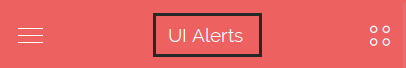
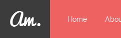
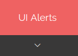
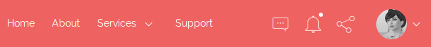
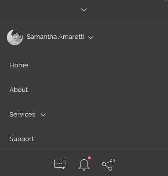

Thank you for support our work, Amaretti is an HTML/CSS/Js admin template based on the famous Bootstrap framework, made it with love in every pixel.
In this document you will find a complete guide which covers topics about the product functionality, components, structure, workflow and the initial setup.
Once you downloaded this product, extract the zip file and you will find four main folders:
amaretti ├── html ├── light ├── src └── docs
This folder contains the complete distribution version with all demo content included as seen in the live preview version. Also it comes with LESS files, which will allow you to customize the template easily.
This folder contains the essentials components, this version does not include any of the live preview examples. This version is especially designed to get started with only the needed elements.
In this folder you'll find the template's source code, including a workflow that runs with Grunt.js, if you haven't used Grunt before, be sure to check out the Getting Started guide. If you want to customize the product to fit your specific needs, this is the right place to start with.
The current documentation is located inside this folder.
The tamplate main structure is divided in four sections: Top bar, Left sidebar, Right sidebar and Main content.
<!DOCTYPE html>
<html lang="en">
<body>
<div class="am-wrapper">
<nav class="navbar navbar-default navbar-fixed-top am-top-header">
<!-- Top bar -->
</nav>
<div class="am-left-sidebar">
<!-- Left sidebar -->
</div>
<div class="am-content">
<!-- Main Content -->
</div>
<nav class="am-right-sidebar">
<!-- Right sidebar -->
</nav>
</div>
</body>
</html>
This template require three JavaScript libraries to work:
In addition to these libs, the main structure needs a basic modular js core to provide the template interaction like sidebars functionality. This file is located in "assets/js/main.js"
Be sure to include the essentials scripts in your pages, for example inside your head tag should be like this:
<link rel="stylesheet" type="text/css" href="assets/lib/stroke-7/style.css"> <link rel="stylesheet" type="text/css" href="assets/lib/jquery.nanoscroller/css/nanoscroller.css"> <!--[if lt IE 9]> <script src="https://oss.maxcdn.com/html5shiv/3.7.2/html5shiv.min.js"></script> <script src="https://oss.maxcdn.com/respond/1.4.2/respond.min.js"></script> <![endif]--> <link rel="stylesheet" href="assets/css/style.css" type="text/css">
And just before the body tag ends, please add these JavaScript libs:
<script src="assets/lib/jquery/jquery.min.js" type="text/javascript"></script>
<script src="assets/lib/jquery.nanoscroller/javascripts/jquery.nanoscroller.min.js" type="text/javascript"></script>
<script src="assets/js/main.js" type="text/javascript"></script>
<script src="assets/lib/bootstrap/dist/js/bootstrap.min.js" type="text/javascript"></script>
<script type="text/javascript">
$(document).ready(function(){
//initialize the javascript
App.init();
});
</script>
We are extending the Bootstrap Navbar component using the fixed version by default, we also added some custom elements:
<nav class="navbar navbar-default navbar-fixed-top am-top-header">
<div class="container-fluid">
<!-- Navbar Header -->
<div class="navbar-header">
<!-- Page title - visible on mobile -->
<div class="page-title">
<span>Blank Page</span>
</div>
<!-- Left sidebar toggle button - visible on mobile -->
<a href="#" class="am-toggle-left-sidebar navbar-toggle collapsed">
<span class="icon-bar">
<span></span>
<span></span>
<span></span>
</span>
</a>
<!-- Brand Logo -->
<a href="#" class="navbar-brand"></a>
</div>
<!-- Right sidebar toggle button -->
<a href="#" class="am-toggle-right-sidebar">
<span class="icon s7-menu2"></span>
</a>
<!-- Navbar collapse toggle button - visible on mobile -->
<a href="#" data-toggle="collapse" data-target="#am-navbar-collapse" class="am-toggle-top-header-menu collapsed">
<span class="icon s7-angle-down"></span>
</a>
<!-- Navbar collapse - This will be hidden by default on mobile -->
<div id="am-navbar-collapse" class="collapse navbar-collapse">
<ul class="nav navbar-nav navbar-right am-user-nav">
<!-- User Menu -->
</ul>
<ul class="nav navbar-nav am-nav-right">
<!-- Left Menu -->
</ul>
<ul class="nav navbar-nav navbar-right am-icons-nav">
<!-- Icons Menu -->
</ul>
</div>
</div>
</nav>
There are three elements inside this component: "page-title", "navbar-toggle" and "navbar-brand".
Page Title
This element is used to show site's title on mobile resolutions, and it's hidden by default on larger screens.

Navbar Toggle
It's used to open/close the left sidebar on mobile resolutions.
Navbar Brand
This is the element where your logo should be placed, this element is only shown in non-mobile resolutions.

It's used to open/close the collapse navbar on mobile resolutions.

Is composed by a group of elements which are going to be hidden(collapsed) on small devices.


In every page, we are calling an object method which handles the basic template interaction. It's written with "The Module Pattern" which encapsulates certain code, and allows you to use it when it's needed.
We use a global javascript object called "App", it provides a modular structure that we use to initialize the demo Js plugins on each demo page. You can find several modules in "assets/js" inside the html folder.
Said that you'll notice that there are different Js modules for some of the demo pages, all of them are optional, exept the "main.js" or "main.min.js" in case you want to use the minified version.
This method is responsible for some of the bootstrap plugins initializing, both sidebars funcionality and other reponsive tasks. That's why this is the core method of this template.
You can add it at the end of the page like this:
<script type="text/javascript">
$(document).ready(function(){
App.init();
});
</script>
In order to call the following methods you'll need to include the script reference of the JavaScript file, after that you can call it after the init method this way: App.methodName();
Each of these modules contain the JS init for the demo plugins, feel free to copy and modify according to your needs.
| File Name | Method | Page |
|---|---|---|
| app-dashboard.js | dashboard | index.html |
| app-dashboard2.js | dashboard2 | dashboard2.html |
| app-ui-notifications.js | uiNotifications | ui-notifications.html |
| app-ui-nestable-lists.js | uiNestableLists | ui-nestable-lists.html |
| app-charts.js | charts | charts.html |
| app-form-elements.js | formElements | form-elements.html |
| app-form-wizard.js | wizard | form-wizard.html |
| app-form-masks.js | masks | form-masks.html |
| app-form-wysiwyg.js | textEditors | form-wysiwyg.html |
| app-form-wysiwyg.js | textEditors | form-wysiwyg.html |
| app-tables-datatables.js | dataTables | tables-datatables.html |
| app-pages-profile.js | pageProfile | pages-profile.html |
| app-pages-calendar.js | pageCalendar | pages-calendar.html |
| app-pages-gallery.js | pageGallery | pages-gallery.html |
| app-maps-google.js | mapsGoogle | maps-google.html |
| app-maps-vector.js | mapsVector | maps-vector.html |
You can extend the App modular structure easily by creating your own modules like this:
var App = (function () {
App.moduleName = function( ){
'use strict'
//Js Code
};
return App;
})(App || {});
There are three different ways to use this template in your next project:
This is the quickest way to setup the template, you just have to copy the "light" folder content into your project root folder and start working on the index.html file.
Be sure to include the essentials scripts in your document to get things work properly. After that you're ready to start building.
This method is perfect if you think you are not going to make several changes to the original version and use it "as is", otherwise we suggest to use one of the following methods.
In case you don't know nothing about css pre-processors, this is a brief description about what it is:
Less is a CSS pre-processor, meaning that it extends the CSS language, adding features that allow variables, mixins, functions and many other techniques that allow you to make CSS that is more maintainable, themable and extendable.
In other words with css-preprocessors you can change the full color theme of this template by just changing a few lines of code.
"assets/css" folder a file called style.less alongside with the style.css file.style.less => amaretti.less.style.less which you are going to use it to modify variables and create your custom code.After that, you'll need to include the original main less file into the new file like this:
//Import the template source code @import "amaretti.less"; //Your custom code goes here
Inside this file you can modify the bootstrap and template variables values for example to change the color palette:
//Import the template source code @import "amaretti.less"; //Modify temaplate colors @primary-color: #7F64B5; @alt-color1: #65CEEC; @alt-color2: #ffdc7a; @alt-color3: #45D8C2; @alt-color4: #e0e0e0;
The final step is to compile this file into style.css in order to use it in your project. To do this you'll need a LESS compiler, you can checkout the official docs to find out your best option.
If you are new to LESS we suggest you to use a GUI interface, for Windows you can use Winless, for OS X you can use CodeKit and Plessc or Koala for Linux.
The template comes with several veriables that you can use to customize and create your own version, alongside with the Bootstrap default variables.
To see what variables are available go to "assets/css/includes/config.less" and Bootstrap variables are located in "assets/lib/bootstrap/less/variables.less".
Grunt is a task runner which allows to build a complete and automatic workflow.
In one word: automation. The less work you have to do when performing repetitive tasks like minification, compilation, unit testing, linting, etc, the easier your job becomes. After you've configured it through a Gruntfile, a task runner can do most of that mundane work for you—and your team—with basically zero effort.
If you haven't used Grunt before, be sure to check out the Getting Started guide, as it explains how to create a Gruntfile as well as install and use Grunt plugins.
Supposing that you already are familiar with Grunt, we are going to explain step by step how to get started with the built-in workflow.
If you already have Node.js and Grunt.js installed you can skip this step.
npm install -g grunt-cli to install Grunt globally.In your terminal go to the root folder with cd command and then enter the following command to install the project dependencies: npm install
After install dependencies now you can run the automated taks, here are the available commands:
| Command | Description |
|---|---|
| grunt | It runs the watch command, this way you can modify your less files and it automatically runs the less compiler task, designed for development. |
| grunt dist | Generate the end-compiled-ready-to-use distribution folder in your project root. |
| Command | Description |
|---|---|
| grunt less | Less compiler task |
| grunt autoprefixer | parse CSS and add vendor prefixes to CSS rules using values from Can I Use. |
| grunt cssmin | A CSS minifier task. |
| grunt watch | Run LESS compilation task whenever LESS files patterns are added, changed or deleted. |
This template comes with three main dependencies, and several plugins for the demo pages, here is the plugin list with the official documentation for each one.
We are here to assist you, thank you for report any bug/issue to our email support@foxythemes.net.
What support includes?
What support doesn't include:
If you already read the documentation and you still need assistance, please send us your purchase data to support@foxythemes.net in order to give you access to our support forum.
| Version 1.1.4 - 3 Nov 2015 |
|---|
| Added: Back to top button |
| Fixed: Layout transition effect on window resize |
| Fixed: Close sub menu on item click event |
| Fixed: LESS path issue with different compilers than Grunt |
| Fixed: iOS toggle sidebars not working |
| Fixed: Remove swipe event on large devices |
| Version 1.1.2 - 27 Oct 2015 |
|---|
| Fixed: Small issues |
| Added: Email Inbox page |
| Added: Email Detail page |
| Added: Email Compose page |
| Added: Morris charts page |
| Added: Sparkline charts page |
| Version 1.1 - 13 Oct 2015 |
|---|
| Fixed: Contrast text colors have been fixed in all color skins |
| Fixed: Support for anchor tags inside panel tools icons |
| Added: "Remember me" checkbox on login pages |
| Added: Open sidebars with touch swipe on mobile devices |
| Added: Option to remove both sidebars & examples pages |
| Added: Fixed left sidebar example page |
| Added: White header version & example pages |
| Version 1.0.0 - 1 Oct 2015 |
|---|
| Initial Release |